Elliot Alderson
Elliot Alderson, ingénieur en sécurité informatique à Allsafe Security et cyber-justicier qui souffre d’anxiété sociale
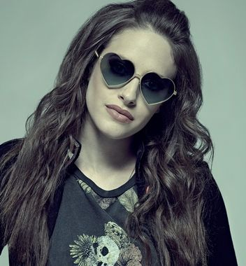
Darlene Alderson
Darlene Alderson, soeur d’Elliot Alderson et hackeuse de Fsociety
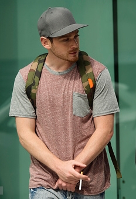
Cisco
Cisco (=Francis Shaw) est le petit ami de Darlene et qui est en contact
avec le groupe d'hackers nommé Dark Army
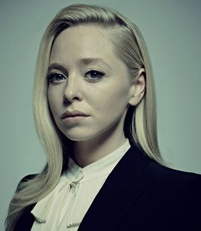
Angela Moss
Angela Moss, amie d'enfance d'Elliot et collègue de travail à Allsafe Security
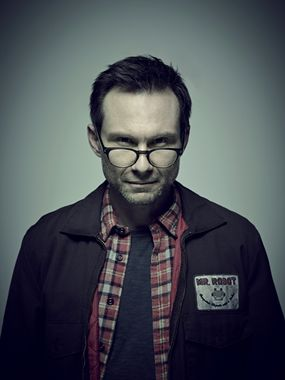
Mr Robot
Mr. Robot (=Edward Alderson/ père d'Elliot), activiste à la tête du groupe de hackers nommé Fsociety
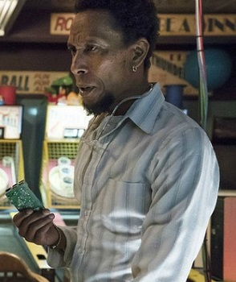
Leslie Romero
Leslie Romero, membre de Fsociety. Il semble avoir des connaissances poussées en biologie
qu'il utilise pour cultiver des plants de marijuana modifiés. Il est l'ingénieur social
de Fsociety, et a rejoint le groupe pour la gloire
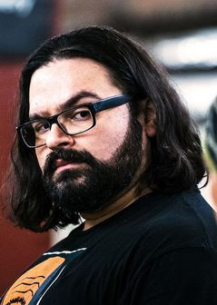
Mobley
Mobley (=Sunil Markesh), membre de Fsociety. C'est l'analyste du groupe : il recherche
les documentations en tout genre en vue des piratages. Il semble avoir rejoint le groupe
car il « n'aurait pas d'amis » selon Trenton
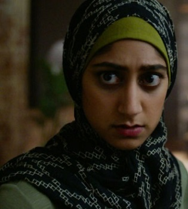
Trenton
Trenton (=Shama Biswas), membre de Fsociety, iranienne. C'est l'une des programmeuses
de Fsociety. Elle a rejoint le groupe pour son idéologie : étant fille d'immigrés,
elle a vu ses parents écrasés par l'économie américaine
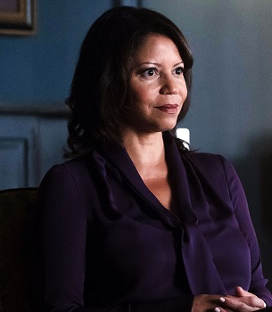
Krista Gordon
Krista Gordon est la thérapeute d'Elliot
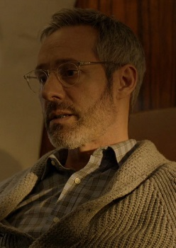
Gideon Goddard
Gideon Goddard est le PDG de Allsafe Security
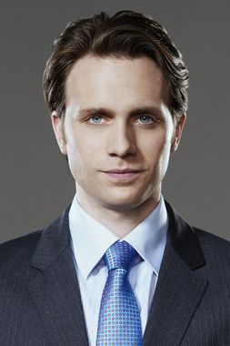
Tyrell Wellick
Tyrell Wellick est le directeur technique adjoint à E Corp
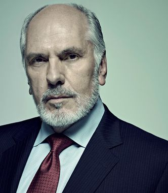
Phillip Price
Phillip Price est le PDG d’E Corp
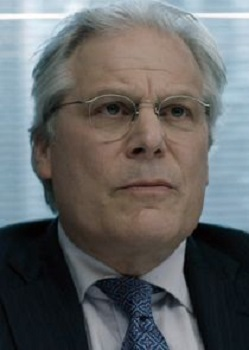
Terry Colby
Terry Colby, l'ancien directeur technique d’E Corp, a été tenu responsable d’une
attaque de hacking réalisée par Fsociety
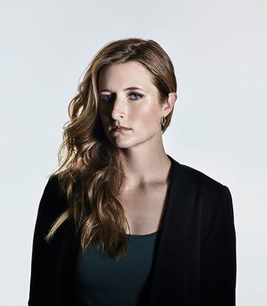
Dominique DiPierro
Dominique DiPierro, surnommée Dom, est une agent du FBI
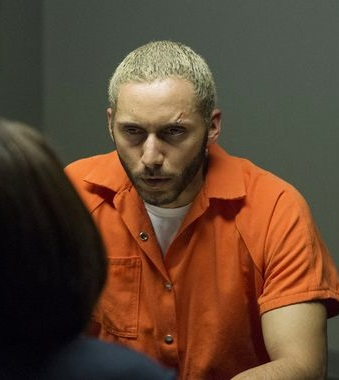
Fernando Vera
Fernando Vera est le trafiquant de drogue et fournisseur d’Elliot en
suboxone (drogue) qui a une dangereuse philosophie
et qui est obsédé par Shayla
(Shayla qui est ensuite devenue la petite amie d'Elliot quand
Vera est allé en prison)
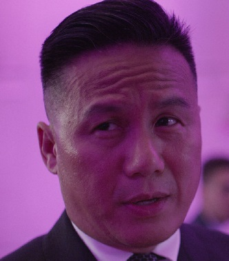
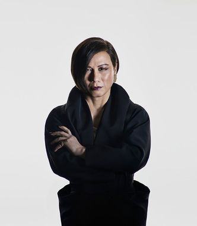
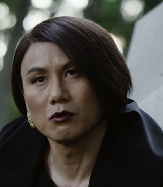
Whiterose/Zhang
Whiterose/Zhang est une femme transgenre, leader du groupe de hackers
The Dark Army et Ministre de la Sécurité de l'État de Chine
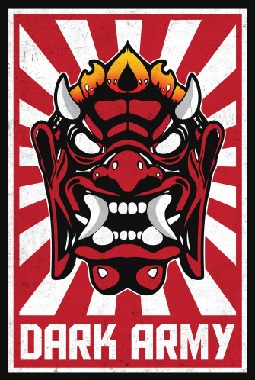
Dark Army
La Dark Army est un groupe de hackers basé en République Populaire de Chine,
dirigé par le mystérieux Whiterose. Avec des liens présumés avec l’Iran,
la Russie et la Corée du Nord, la Dark Army a la réputation d’être impitoyable.
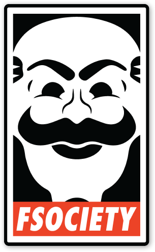
Fsociety
Fsociety est le nom d’un groupe de hackers basé à Coney Island, New York,
dirigé par le mystérieux Mr. Robot. Son nom est une pièce de théâtre sur le parc
d’attractions abandonné dans lequel il a son siège social, et leur message : "f**k society."